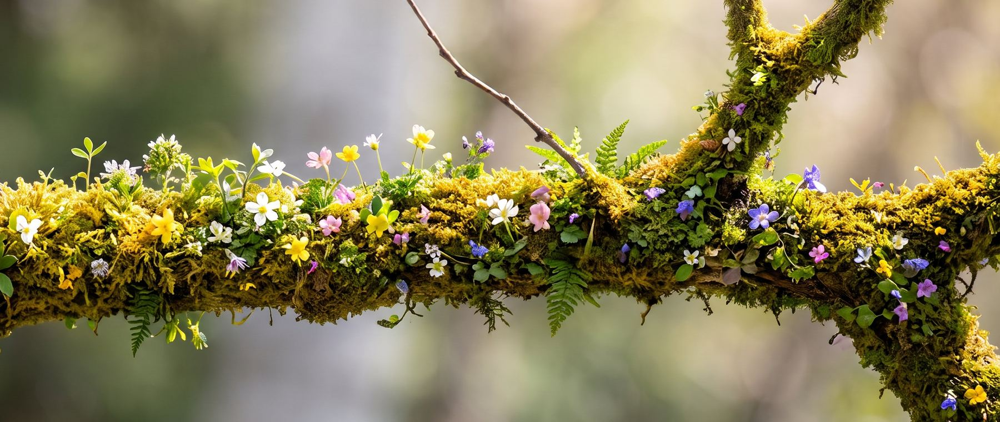

Opening hours
Open now- March to October
- 09:00–18:00
- November to February
- 09:00–16:30
- Last entry
- 1 hr before closing
- Members' early hour
- Sat 07:30
Times are UK time. Dogs on short leads are welcome everywhere except the Glasshouse.

Bare wood in winter, moss and wildflowers by spring. Walk forty acres of woodland and meadow that change with every month of the year.
Move along the branch
Open today 09:00–16:30
Hollowmere is forty acres of woodland and meadow on the edge of Ashcombe. Nothing is planted for one big week. Something flowers on every day of the year, and the gates are open on all of them.
Nothing here is planted for one big week. Pick a month to see what you would walk past.
Every path loops back to the gate. The longest walk takes about an hour if you stop to look, and most people stop.

Ninety kinds of moss grow on one wall.
WE HAVE NOT CLEANED IT SINCE 1911Christmas Day included. Book ahead on weekends in April and May, when the bluebells bring everyone.
Times are UK time. Dogs on short leads are welcome everywhere except the Glasshouse.
Members walk in free. Twenty minutes by bus from Ashcombe station, and parking is free with a ticket.
Members walk in before the gates open, when the mist is still on the meadow and the only footprints are the deer's.